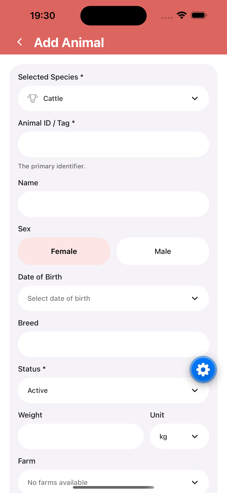

Animal register
Track each animal with a straightforward register built for practical farm use.
Livestock Tracker
Animal records and exports
Built for day-to-day farm management
Livestock Tracker helps you register animals, maintain records, organize setup data, and export PDF or spreadsheet files from one mobile workflow.
Track each animal with a straightforward register built for practical farm use.
Capture routine farm activity and keep important information easier to review later.
Generate PDF and spreadsheet files without rebuilding the same data by hand.
Keep farms, paddocks, groups, and medicines organized in one consistent structure.
Register and manage
The app opens into clear working screens with room to register animals, move through setup, and keep the core farm structure tidy from the start.

Data entry
Add animals with structured fields, clear required markers, and straightforward dropdown choices built for real farm record entry.

Exports
Export screens are built to help you filter what matters and generate PDF or spreadsheet outputs without leaving the app.
Screenshots

Contact
Reach out via support@your-app.com and use the GitHub Pages version while the production domain is still being set up.